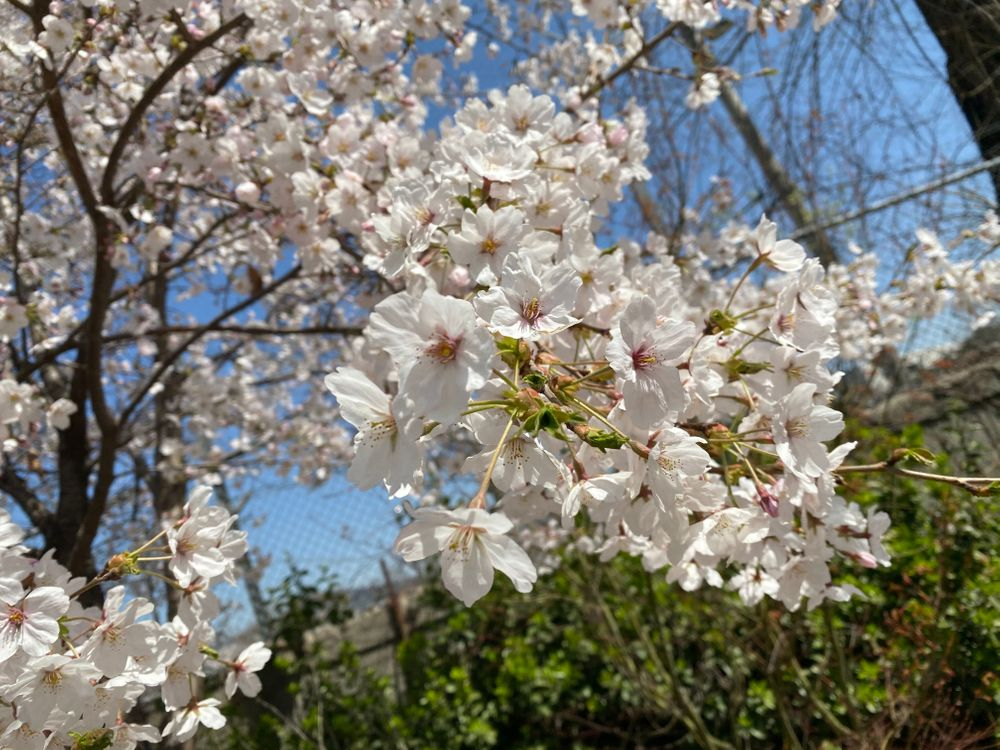

おはよう👋🏻
ひいだよ🍓

かなり今更すぎるけど
桜散っちゃったね🥲
今日はめっちゃ早起きした🥱
今まで早起きって言ってた日より
もっと早く起きた！！
早起きするとやっぱりいいねえ〜😚
이호は朝ごはん食べましたか🥣
なんだか今日は
納豆ごはんが食べたい気分🍚
納豆ごはんと卵焼きとお味噌汁のセット
最高すぎるよねえええ
そんなこと言ってたら
奈良漬け食べたくなってきた🤤
でもひい最近
しょっぱいもの？味が濃いもの？
なんか食べられなくなった😮
🍚ですよ🤓も好きだったなあ〜
うわっ急に食べたすぎるどうしよ🤦🏻♀️
自分で話し始めたのに
結局今目の前にないから食べられなくて
自分で苦しめるというね🤷🏻♀️
自発自爆飯テロ(?)
ではまたっ
일찍 일어났어!!
이호는 항상 아침밥은 어떤거 먹어??
난 지금 낫토를 너무 먹고싶어...
낫토+계란말이+된장국
이 세트...
내가 학교 다닐 때 먹었던 아침메뉴...
항상 똑같이 먹어도 질리지 않았던 메뉴ㅎ
갑자기 그립다🤧
TMI💡
아침에 엘리베이터에서 대학생(?) 같은 분을 봤더니
갑자기 하교 가고싶어졌어!!ㅎㅎㅎ
추천메뉴는...
피스타치오 버블티 🧋
최근에 나왔더라!! 신상!!!
어떤 맛인지 나무 궁금해!!
먹어준 이호~🙋🏻♀️??ㅋㅋㅋ
ばいばーい👋🏻
ひいまる🥟